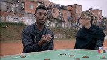
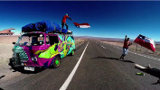
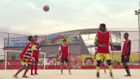
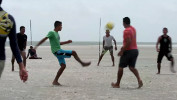

A Copa passou por aqui - episódios
A COPA PASSOU POR AQUI
SINOPSES DOS EPISÓDIOS
SINOPSES DOS EPISÓDIOS
|  |
01. COPA DE BOTÃO Direção: Esmir Filho São Paulo (exibido em 22/12/2014) CRÉDITOS COMPLETOS |
"Copa de Botão" aborda os diferentes pontos de vista de estrangeiros que vivem em São Paulo. Enquanto disputam um campeonato de jogo de botão, cada personagem ou jogador, representando o time de sua nacionalidade, debate com seu adversário questões relevantes sobre como é viver no Brasil sendo estrangeiro, as diferenças e semelhanças com seu país de origem, a relação construída com a cidade de São Paulo e claro, a relação de cada um com o futebol e com a copa que passou por aqui.
|
02. MEU NOME É MANINHO Direção: Adirley Queirós Brasília (exibido em 23/12/2014) CRÉDITOS COMPLETOS |
Durante a passagem da Copa do Mundo do Brasil em Brasília, acompanharemos Maninho, um ex-jogador de futebol profissional que hoje trabalha como ambulante, vendendo águas e bandeiras das seleções. Neste trajeto do seu novo emprego, lembranças despertam uma memoria recente que ao mesmo tempo é lúdica e melancólica. Afinal, qual jogador de futebol no Brasil nunca sonhou em disputar uma Copa do Mundo?
 |
03. COMO SE VIVE, COMO SE TORCE Direção: Davi Pretto Porto Alegre (exibido em 24/12/2014) CRÉDITOS COMPLETOS |
O episódio "Como se Vive, Como se Torce", dirigido por Davi Pretto, mostra a comoção e detalhes de um dia de diferentes pessoas para um assistir um jogo da seleção brasileira, observando as peculiaridades e o fio invisível que os une. Um confeiteiro que vai estar trabalhando, um motorista de tele-entrega, uma família que se prepara há dias para assistir o jogo, um porteiro, um cobrador de um ônibus, etc. Todos brasileiros, seja onde for e como for, estarão conectados entre si e interagindo com a partida. Vamos descobrir como cada um deles torce.
|
04. GUERRA DE GIGANTES Direção: Beto Magalhães e Anna Flávia Salles Belo Horizonte (exibido em 25/12/2014) CRÉDITOS COMPLETOS |
Numa conversa entre duas gerações de apaixonados por futebol, histórias sobre as duas copas que ocorreram em Belo Horizonte são contadas. Aqui aconteceu uma das maiores zebras da história do futebol, a derrota da Inglaterra para os EUA, quando os ingleses acreditavam ter ganhado o jogo mesmo antes de jogar, em 1950. O mesmo ocorreu com o Brasil na triste partida contra o Uruguai, que resultou no Maracanaço. Em BH, 64 anos depois, uma despreparada seleção acredita poder vencer a Alemanha. Cenas inéditas de um grupo de torcedores reverberam a perplexidade que atravessou o país durante os 7 X 1 da Alemanha contra a seleção brasileira. E fez-se o Mineiraço.
|  |
05. AQUELE ABRAÇO Direção: Leandra Leal, Rita Toledo e Carolina Benjamin Rio de Janeiro (exibido em 26/12/2014) CRÉDITOS COMPLETOS |
Eles vieram de bicicleta, a pé, de ônibus, de trailer. Atravessaram desertos, cruzaram o continente, dormiram na rua, em hotéis nas favelas. Munidos com suas câmeras, milhares de viajantes circularam pela cidade sem gastar muito dinheiro e viveram a Copa do Mundo como uma grande festa. Construído inteiramente com as imagens feitas pelos próprios turistas, o curta mostra o Rio de Janeiro que eles descobriram e as aventuras de viver o avesso da Copa do Mundo.
|  |
06. PEDRA QUE DORME, PEDRA QUE CANTA Direção: Tata Amaral São Paulo (exibido em 27/12/2014) CRÉDITOS COMPLETOS |
A casa de Odair fica perto do Itaquerão, estádio paulistano que sediará a abertura da Copa de 2014. Animados com a perspectiva da vinda de turistas para o bairro, Cristina, sua namorada, decide alugar sua casa.No pacote, oferecem serviços de transfer, sight seeing e temporada na casa de Cristina, que fica em Praia Grande, litoral paulista.
 |
07. RITOS Direção: Maria Augusta Ramos Rio de Janeiro (exibido em 29/12/2014) CRÉDITOS COMPLETOS |
Filmado no Rio de Janeiro, o episódio RITOS, acompanha a Copa do ponto de vista de dois grupos de jovens cariocas: um que se reúne no tradicional reduto de torcedores do bairro da Tijuca, o Alzirão e outro, formado por jovens da Frente Nacional dos Torcedores. Enquanto o primeiro grupo dedica-se a decorar sua rua de verde e amarelo, enfeitá-la com bandeirolas e montar um grandetelão para receber milhares de torcedores;o outro tem um importante atuação política nas ruas questionam o processo de elitização do futebol, os altos preços dos ingressos e os bilhões gastos com as reformas dos estádios.
|  |
08. O TIME DA CROA Direção: Jorane Castro Belém do Pará (exibido em 30/12/2014) CRÉDITOS COMPLETOS |
No Nordeste do Pará, os pescadores que vivem na Praia de Ajuruteua, município de Braganca, são apaixonados por futebol. Não perdem um jogo da Seleção ou dos times paraenses para os quais torcem. Além disso, todo fim de tarde, quando o sol já está mais ameno, eles se encontram nos diversos campinhos de futebol espalhados pelo vilarejo, para bater uma bola. Os pescadores de Ajuruteua levam tão à sério a paixão pelo esporte nacional que sempre embarcam com uma bola acomodada na proa do barco. Quando podem, eles encontram os parceiros de pescaria nas croas, como são chamados os bancos de areia naquela região, para um pelada. Ali, à maré baixa, eles jogam futebol, neste campo efêmero, criado pela natureza, antes de voltar para o mar aberto e enfrentar os desafios de mais uma pescaria.
|
09. DEPOIS DA AVENIDA Direção: Vicente Moreno Porto Alegre (exibido em 31/12/2014) CRÉDITOS COMPLETOS |
O impacto da Copa do Mundo sobre uma humilde comunidade vizinha ao estádio Beira-Rio em Porto Alegre. Sem acesso ao grande evento, os moradores da Vila Gaúcha encontram outras formas de preencher suas vidas. Acompanhamos sua rotina antes e durantes os jogos, traçando um retrato sensível desses que moram tão perto da festa, mas não têm tantos motivos para celebrar.
|
10. A COPA DO MUNDO NO RECIFE Direção: Kleber Mendonça Filho Recife (exibido em 01/01/2015) CRÉDITOS COMPLETOS |
Kleber Mendonça Filho, realizador pernambucano de Vinil Verde, Recife Frio e O Som ao Redor juntou uma equipe de colaboradores amigos nos meses de Junho e Julho de 2014, para registrar a passagem da Copa do Mundo na cidade do Recife. A única real pretensão desse filme de 13 minutos: oferecer um arquivo para o futuro de um momento singular na cidade, que recebeu o futebol globalizado e perseguido por multidões de visitantes estrangeiros. O Recife, passando por tantas mudanças, foi o pano de fundo para uma festa de alegria e tensão, esportiva e política, uma experiência feliz, mas repleta das contradições que fazem o Brasil ser o Brasil, que aqui ganha a cara e o espaço do Recife.
|
11. TUDO OU NADA EM SOTERÓPOLIS Direção: Lázaro Ramos Salvador (exibido em 02/01/2015) CRÉDITOS COMPLETOS |
Após o sorteio do calendário dos jogos da Copa do Mundo e somados os feriados, Salvador ficou com apenas 04 dias úteis, ou seja, um grande "feriadão em Salvador", durante a Copa. Diante desta situação inusitada "Tudo ou Nada em Soterópolis" retrata aqueles que vibram com a Copa do Mundo, torcedores e fanáticos por futebol, e também aqueles para quem a Copa do Mundo não chega com o mesmo "fervor". Viveremos com eles momentos importantes durante a Copa, olhando por perspectivas distintas o mesmo fato: o futebol.O filme apresenta ao espectador uma Bahia torcedora, mas uma Bahia real com suas áreas litorâneas, subúrbio, comércio, parte história e turística, uma Bahia real em sua diversidade e claro, em seu bom humor.